人机友好京张：具身智能时代的共行、共事、共治城市设计概念方案
基于作者博士研究与《人工智能与未来城市》书稿中的人机友好空间方法，以及复兴岛导则与企鹅岛/WeCityX 工程经验的概念转译，以「人机友好京张」为总品牌，把京张遗址公园重塑为连接众智园、AI原点社区与大钟寺的人机友好共行带：以“空间适应性优先于机器能力迭代”为总原则，用流—场—网与点—线—面—流—策组织空间，用通用无障碍与可审计数字孪生双底座、H0–H3 分级共行、五景五友好与测试—入驻—研发产业路径，实现人优先的共行、共事、共治。
人机友好京张：具身智能时代的共行、共事、共治城市设计概念方案
**作者署名：未来博士 wepon** · GitHub weponusa · AI agent 协作起草
设计依据与资料清单
本方案以北京市规划和自然资源委员会海淀分局《百年京张AI创新带城市设计国际方案征集资格预审公告》为第一任务依据，确认三层范围、三处重点区与设计任务 [source:OFFICIAL-ANNOUNCEMENT] [standard:PROJECT-OFFICIAL-ANNOUNCEMENT]。面向智能体任务书补充三大定位、五大功能、三区两翼、六项智能体任务与统一边界条款 [source:AGENT-TASKBOOK] [standard:PROJECT-AGENT-OPEN-CALL-TASKBOOK]。
机器可读资料包括 brief/site-package/、data/source_registry.json 与 data/processed/agent_fact_pack.md [source:SITE-PACKAGE] [source:SOURCE-REGISTRY] [source:PROCESSED-FACT-PACK]。边界采用 provisional polygon，标注 official_boundary=false，官方红线发布后须整体复算 [source:BOUNDARY-SOURCE] [source:KEY-AREA-SOURCE] [source:PROVISIONAL-BOUNDARIES-2026]。
方法与理论来自作者长期研究与工程转译，均按**概念方法转译**使用，不构成对外部项目成果的复制，也不把任何外部园区参数直接写成海淀法定标准：
1. **博士研究与书稿方法**：《面向未来城市的人机友好空间建设》与《人工智能与未来城市》发展篇提出：未来城市运行呈“高频度、分布式、松耦合”；空间组织遵循“流—场—网”与“数字纽带”；人机关系按“人—机—环境（HME）”三维展开；空间策略落实为“点—线—面—流—策”五维适应性体系；总判断是**空间适应性优先于机器能力迭代**——先把接口、连续性、标识与规则做成公共底座，再谈机器拟人与末端定制 [source:METHOD-THESIS-HMF] [source:METHOD-BOOK-FUTURE-CITY]。 2. **企鹅岛 / WeCityX（深圳）**：园区尺度把导则条款化，用“干线效率 + 末梢慢行共融”的分级双模态路网与中央绿脊验证共行；对比实验与仿真支撑“环境侧适配释放技术效能” [source:CASE-PENGUIN-WECITYX]。 3. **复兴岛人机友好城市导则（上海）**：双底座（通用无障碍 + 数字孪生）、五景五友好、测试—认证—接入企业门禁，以及第十二章“规划评估—建设同步—运营优化—规则迭代”全流程；京张只转译手续，不转译低空、专用道或 L4–L5 [source:CASE-FUXING-HMF-GUIDE]。 4. **海淀产业公开叙事**：三区两翼与 AI 集聚背景 [source:INDUSTRY-PUBLIC-HAIDIAN-AI]。
专业标准分别覆盖城市设计与控规编制深度 [standard:MOHURD-URBAN-DESIGN-MEASURES] [standard:MOHURD-CONTROL-DETAILED-PLANNING]，以及建筑设计深度与用地分类 [standard:MOHURD-ARCH-DESIGN-DEPTH-2016] [standard:MNR-LAND-USE-CLASSIFICATION-GUIDE]。公开草案 brief 界定成果边界为概念建议，须经专业团队与法定程序深化 brief/public-brief.md [source:PUBLIC-BRIEF]。
本方案所称“人机友好”，按作者研究定义，是城市空间、设施与系统同时满足人类与具身智能体的运行、交互与共存，形成**人—机—环境三位一体**秩序：人类的生命安全、尊严、无障碍通行、知情与退出权始终优先；机器必须可识别、可预测、可避让、可接管、可追责；环境同时提供物理可达、数字可读和低碳运维条件。它明确反对“机器优先挤占人的舒适与审美”，也反对把“给人的无障碍”与“给机器的适机化”拆成两套互斥工程——工程上应追求一次改造、多重收益 [source:METHOD-BOOK-FUTURE-CITY] [source:CASE-FUXING-HMF-GUIDE]。复兴岛尺度参数与 WeCityX 路权逻辑仅作概念底线，落地前须完成北京本地法规适配、文保与交通专项复核。
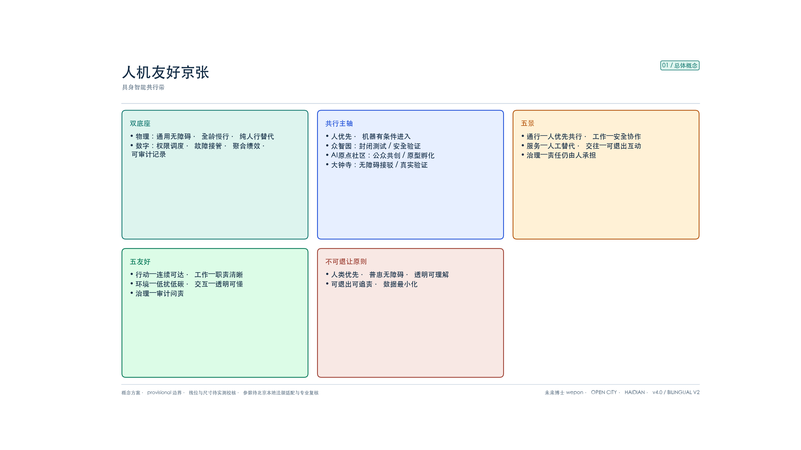
三层范围工作框架
依据公告，采用“统筹研究—总体设计—重点详细”三层递进 [source:OFFICIAL-ANNOUNCEMENT] [depth:three_level_scope_framework]。
**统筹研究范围（约43.6平方公里）** 回答 AI 创新带在海淀与京津冀创新网络中的角色，对应世界级生态与未来城市形态研究。
**总体设计范围（约11.4平方公里 / 复算约1141.3公顷）** 是本方案提交边界 [data:geometry/site_boundary.geojson#SITE-001] [metric:site_area_sqm]。provisional 几何南北跨度约9.7公里、东西约1.4公里，长宽比约7:1 [metric:corridor_aspect_ratio_ns_ew]，决定必须用**线性主轴**而非均质面域组织空间 [source:PROVISIONAL-BOUNDARIES-2026]。
**重点区域范围（约368.4公顷）** 含众智园约192.1公顷、AI原点社区约104.3公顷、大钟寺约72.0公顷，约占总体设计范围32.3% [metric:key_area_share_of_overall]、统筹研究范围8.4%；三区面积比约 **52:28:20**（北重南轻）[data:geometry/key_areas.geojson#PROV-KEY-001] [metric:key_area_count]。
三层落位逻辑：产业战略定角色 → 总体设计定主轴与通则 → 重点区细化到可讨论的节点与场景。所有面积为复算参考值，官方 polygon 到位后统一重算 [depth:metrics_recalculation]。
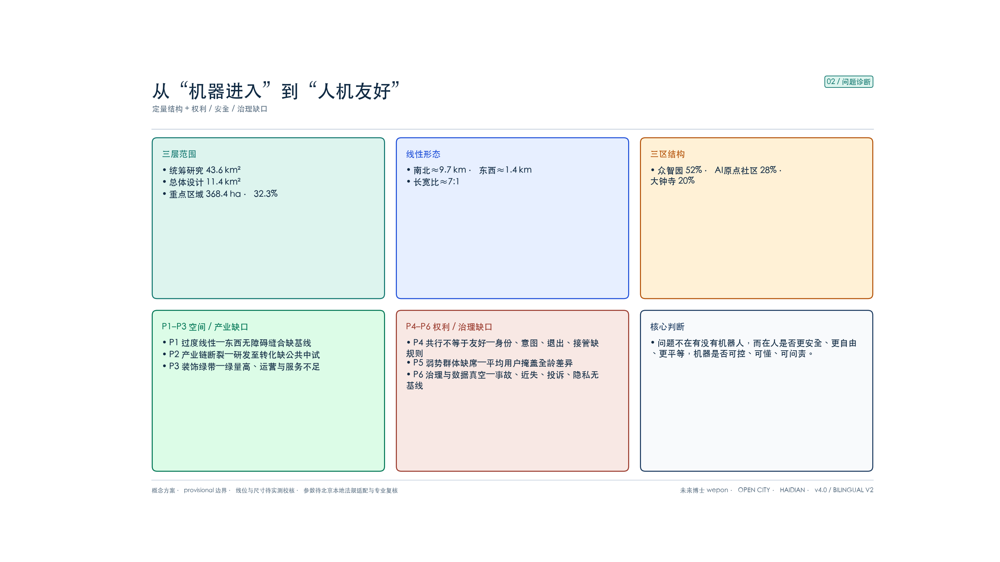
问题诊断与定量结构分析
核心问题表述
京张走廊在统计上高度集聚、形态上极度线性，运行上仍接近「三段园区 + 一条遗址绿带」：重点区只占总体约三分之一且北重南轻；东西缝合与慢行断点缺少可复算基线；公园绿量高而运营节点偏稀；人机共行缺少分级路权、机器身份与意图提示、人工接管、隐私退出和责任闭环。结果是**产业联系强度不可测，人机关系也停留在“设备进入空间”，尚未形成对所有人真正友好的公共制度** [depth:existing_conditions_diagnosis]。
六项定量诊断
| 编号 | 问题 | 定量刻画 | 结构含义 | |---|---|---|---| | P1 | 形态过线性、东西缝合弱 | 长宽比约7:1；公告明确要求东西缝合、南北连通 | 必须强化横向接驳支线，而非只做南北绿带 | | P2 | 产业链空间断裂 | 三区 52:28:20；政策已分工底座/策源/转化 | 缺共享中试—测试—交接走廊 | | P3 | 公园偏装饰绿带 | 概念绿地率约36.5% [metric:green_ratio]，场景节点12个、主轴复算长度9.665公里（≈1.24个/km）[metric:scenario_node_density_per_km] [metric:spine_length_m] | 绿量充分，运行层不足 | | P4 | 人机友好标准与空间断点 | 导则底线：净宽≥2.5m、转弯≥0.8m、坡度≤1:12、人行区机速≤1.2m/s；书稿归纳的典型断点（进门/上楼/过坎/找路/充电）在走廊尚未建账；身份标识、意图提示、退出机制现状未知 | 先普查断点再试点，不能只画“机器人车道”或指望单机能力硬闯 | | P5 | 集聚未兑现为联系强度 | 一带约占海淀AI企业/收入/融资七成以上；AI核心产业公开口径2822→3500+亿元 | 缺联合测试、入场转化及公众体验等可复算KPI | | P6 | 数据与治理真空 | 容积率/高度=unknown；边界 provisional；事故、接管、投诉、无障碍连续率无基线 | 精确面积须复算，人机友好绩效须从零建档 |
人机友好五条不可退让原则
与论文中安全优先、以人为本、效率、可持续、协同共生等设计原则对齐，并收束为京张方案可验收条款：
1. **人类优先**：行人、儿童、老人、残障人士和应急人员拥有优先路权与最终决定权；AI 只辅助、不替代公共责任主体。 2. **普惠无障碍 / 一次改造多重收益**：机器可通行必须以轮椅、婴儿车、视听障碍者也能安全通行为前提；适老化、无障碍与适机化在工程上尽量同路径，避免为机器新建第二套排他空间 [source:METHOD-BOOK-FUTURE-CITY]。 3. **机器可读、人可理解**：空间设置连续编码、信标和停靠界面；机器以灯光、声音、屏显明确身份、任务、运动意图与责任主体；人形外观不得掩盖机器属性 [source:CASE-FUXING-HMF-GUIDE]。 4. **可退出、可接管、可追责**：公众可选择无感知/少感知路径和人工服务；设备具备地理围栏、实体/远程急停、人工接管、运行日志、保险与投诉渠道。 5. **数据最小化与持续改进**：默认匿名聚合，不以人脸识别作为公共服务前提；通过近失事件、接管、故障、满意度和弱势群体体验持续复盘。
机器进入城市后的真实困境（方法转译）
书稿与工程现场反复遇到的，首先是空间断点，而不是“再缺一台更聪明的机器人”：进门难、上楼难、过坎难、找路难、充电难。一个两厘米门槛就能卡住末端配送；不连续光照与高反光铺装会抬高感知失败率；补能点稀疏则把服务半径锁死。因此京张走廊若只做“设备投放 + 营销展示”，会把失败成本推给每一台机器与每一个企业；若先把断点普查、接口标准与共行规则做成公共底座，则同一套改造可被多品牌、多机型复用，产业才能从定制化走向可规模化 [source:METHOD-BOOK-FUTURE-CITY] [source:METHOD-THESIS-HMF]。
概念用地结构快照（非正式控规）
方案包用地示意：绿地开敞约28.4%、科研创新约22.4%、商业服务约20.0%、留白弹性约10.2%、居住/高等教育各约7.1%、文化纪念约4.9% [data:geometry/land_use.geojson#LU-001] [metric:land_use_coverage_ratio]。结构已偏创新带，但若无共行主轴，仍只是功能色块拼贴 [depth:land_use_layout]。
统筹研究范围产业与未来城市研究
一带总体概念、命名与识别方向
**总体概念：人机友好京张·具身智能共行带（Human–Machine Friendly Jing-Zhang · Embodied Shared Spine）**。 把京张铁路从运输线与景观绿带，转译为同时服务市民日常生活和具身智能产业迭代的公共走廊：对人是连续无障碍、可选择、可休憩的公园；对机器是可读、可停、可补能、可接管的低速运行环境；对产业是连接「技术研发—原型测试—场景验证—产品展示—商业转化」的公共中试平台。
**主名称：人机友好京张**（英文 *Human–Machine Friendly Jing-Zhang*，副标题 *Low-Speed Shared Spine*）。 命名逻辑对应三大定位：百年京张文化带（轨线记忆）→ 都市AI生活体验带（慢行共行）→ AI融合创新带（人机友好运行与回灌）[source:AGENT-TASKBOOK]。
空间口号：**一线三区、五景五友好、多点双底座、十二时辰**；实施口号：**过不了门就整段降级**；方法口号：**空间先适配、机器再进入**。
- **一线**：人类优先、慢行主导、低速机器有条件共行的共行主轴
- **三区**：众智园（技术验证端）/ 原点社区（研发孵化端）/ 大钟寺（产品转化端）
- **五景**：通行、工作、服务、交往、治理五类真实场景
- **十二时辰**：一日十二条分时共行条款；其中三条升为现场验收门，过不了就整段降级
- **五友好**：行动、工作、环境、交互、治理五维评价
- **多点**：人类静谧点、无障碍休息点、机器停靠交接、充电维护、急停接管、测试舱、人工服务窗口
- **双底座**：通用无障碍物理空间 + 可审计数字孪生运营系统
品牌与识别系统（人机友好京张）
Logo 图形：双轨线 + 低速行驶包络线构成“轨—共行—站”图形；站台点化为交接节点。主色：**锈红**（遗产）+ **墨蓝**（智驾/数字底座）+ **叶绿**（慢行/无障碍），辅色琥珀用于试点与节点。应用面覆盖导向系统、机器身份标识、数字孪生界面与活动物料。本页为概念识别系统，非正式 VI 交付；商标与商用须另行版权核验，且不得用标识外推为行政背书、施工依据或招商合同条款 [source:AGENT-TASKBOOK]。
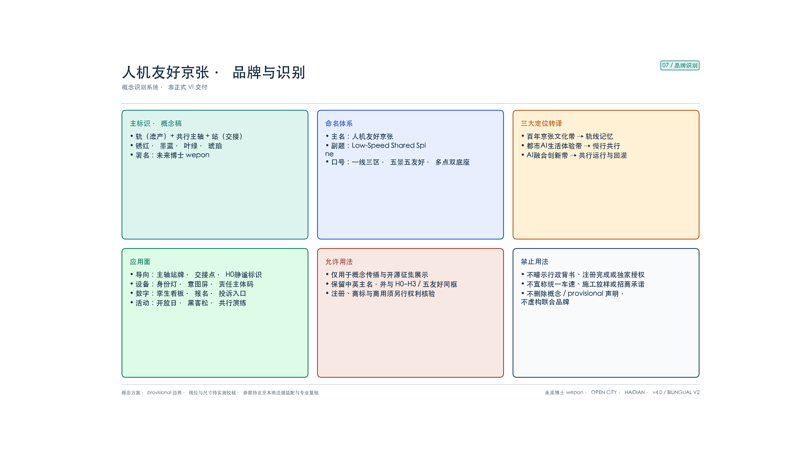
本方案自我定位
本页只做**本方案内部定位**，不对其他投稿的数量、质量或叙事频率作事实判断。对照基准来自任务书要求的三类通用表达目标：开放协作、铁路文化转译、机器可审计运行 [source:AGENT-TASKBOOK]。本方案选择的核心位置是**可执行的人机共行秩序**：空间主轴采用可复算曲线；路权落实为 H0–H3 四级规则；公共利益落实到无障碍、退出、接管与弱势群体旅程；证据以精度分级与“基线待测”约束，不用目标值冒充现状 KPI。该表是自我校准框架，不是竞品排名。
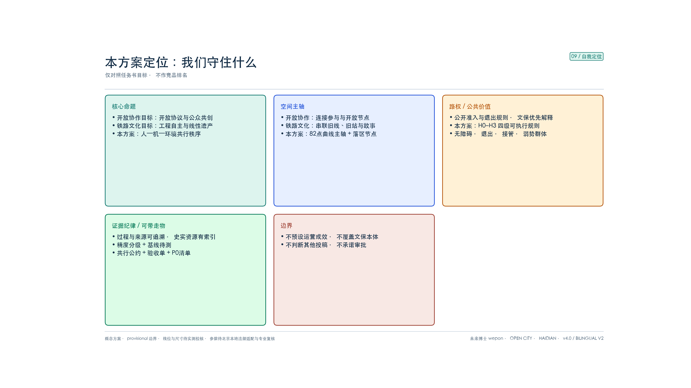
五大功能与三区两翼协同回路
任务书五大功能与本方案空间回应如下，避免与“五景/五友好”混用：
1. **AI全栈自主创新体系**：众智园承担共性技术、传感器标定、仿真与安全验证，公共空间开放前先完成封闭测试。 2. **世界级AI创新生态**：AI原点社区连接高校、开发者、创业团队和公众共创，把全龄可用性与伦理评议纳入原型孵化。 3. **AI+场景赋能新范式**：东翼与主轴开放通行、工作、服务、交往、治理五景，但每一场景必须通过五友好验收。 4. **智能化AI活力城市**：大钟寺与沿线社区提供真实生活验证、人工替代和无障碍服务，使智能设施增进而非取代城市交往。 5. **AI治理全球话语权**：以机器准入、身份/意图透明、数据最小化、退出接管、近失事件和公众参与形成可复制治理协议。
其中，**五大功能是任务书的产业与城市目标；五景是场景分类；五友好是评价维度**，三者不互相替代。
协同回路改为可运行链路：**众智园产出底座与安全协议 → 沿主轴进入开放测试 → 原点社区完成原型迭代与人才组织 → 再经主轴进入大钟寺产品化与消费验证 → 西翼配置资本/IP/出海 → 东翼导入具身与垂类场景 → 运行数据沿主轴回灌研发** [depth:overall_spatial_structure]。地图上表现为南北主轴 + 东西两翼的“工字链 + 反馈环”。
**西翼科技服务机制**：组织算力、资本、知识产权、检测认证、法律伦理与国际化服务，重点支持安全评估、责任保险和标准输出，而非只做招商标签。**东翼场景赋能机制**：以小月河蓝绿界面和社区公共服务为场景接口，建立需求发布—伦理初筛—封闭验证—公众共创—有限开放—复盘退出流程 [data:geometry/constraints.geojson#CON-WTR-001]。
六个全球 AI 创新生态案例对照（agent.2）
以下六案均以政府、大学或非营利研究机构的公开页面为证据入口。表中只摘录来源明确公开的机制；没有统一口径的数据一律写“未据本来源核验”，不把宣传性排名或投资成效外推为事实。比较维度固定为**空间尺度、产业与人才、算力与数据、资金与孵化、场景验证、京张转译边界**。
| 案例与公开来源 | 空间尺度 | 产业 / 人才 / 算力 / 数据 / 资金 / 场景机制 | 已知成效边界 | 京张可转译 | 明确不转译 | |---|---|---|---|---|---| | 新加坡 one-north / LaunchPad + Kampong AI [source:CASE-GLOBAL-ONE-NORTH] | 创新区—创业街区—工作生活复合节点 | JTC 组织模块化创业空间、孵化器/资本网络、邻近高校科研与跨场地试验；Kampong AI 叠加 AI 创业、人才、企业与学术协作 | JTC 公开空间、机构和历史入驻数量；企业长期绩效未据本来源逐项核验 | 两翼服务 + 可变空间 + 全域试验场入口 | 不照搬租赁优惠、准入资格或国家政策 | | 韩国首尔 AI Hub（良才）[source:CASE-GLOBAL-SEOUL-AI-HUB] | 城市级专门机构—锚点设施—分布式企业空间 | 市政府支持分阶段教育、创业孵化、高性能计算、PoC、产学研协作和全球合作 | 官方页面说明项目与设施；企业成效不作因果归因 | 把人才、算力、PoC、开放创新接成服务单 | 不承诺同等补贴额度、算力规模或入驻政策 | | 加拿大多伦多 Vector Institute [source:CASE-GLOBAL-VECTOR] | 研究机构 + 区域企业网络 | 研究人才、FastLane/DaRMoD、工程辅导、数据准备、模型开发部署和原型验证 | 官网公开项目设计及累计服务企业口径；不推断每家商业成功 | “问题定义—数据就绪—原型—部署”企业门 | 不复制加拿大地域资格、资助条件或算力配置 | | 加拿大蒙特利尔 Mila / Mila Ventures [source:CASE-GLOBAL-MILA] | 研究社区—共享总部—创业计划 | 高校研究人才、产业伙伴、创业挑战/孵化/Launchpad、导师与投资网络、云资源和试点连接 | 官网公开社区、伙伴及计划口径；不把规模直接等同城市产值 | 原点社区的研究者转创业阶梯与共享社区 | 不复制品牌、投资承诺、伙伴名单或人才规模 | | 法国 Paris-Saclay [source:CASE-GLOBAL-PARIS-SACLAY] | 区域创新集群—大学/实验室—多孵化器网络 | DATAIA 等研究网络、大学人才、公共/校内孵化、产业协作、种子与创新资金导航、健康/环境/出行应用 | 公共机构公开生态构成；排名、产值和项目成效不作二次外推 | 统筹研究层的多中心科研—产业—场景网络 | 不复制园区规模、国家基金或企业落位 | | 美国匹兹堡 CMU Hazelwood Green Robotics Innovation Center [source:CASE-GLOBAL-CMU-RIC] | 大学转化设施—大型测试空间—邻近制造试验床 | 基础研究、系统集成、可重构测试、预孵化与商业化衔接，连接制造研究设施 | 大学公开设施目标、空间类型与建设信息；未据来源证明区域经济因果 | 众智园的“基础研究—集成—测试—预孵化”空间链 | 不照搬军工场景、捐赠规模、建筑面积或机构治理 |
**统一结论**：六案共同显示，AI 生态不是一栋“AI 大楼”，而是人才、可变空间、算力/数据支持、资金/孵化、场景验证与规则治理的组合。京张据此形成三层生态图谱：众智园承接集成测试与安全协议；原点社区承接人才—原型—创业；大钟寺承接公众/商业验证；西翼组织资本、IP、法律伦理与出海；东翼发布真实场景；双底座提供全线可复用接口。算力、资金和企业名单只作为未来服务机制，不写成已落实资源 [source:AGENT-TASKBOOK] [depth:overall_spatial_structure]。
未来AI城市形态：从运行机制到京张空间转译
作者研究把未来城市运行机制概括为三点，并直接决定京张走廊该怎么“长”：
1. **高频度**：人流、机流、服务请求与近失事件都需要近实时感知与调度，静态“画完就算”的绿带运营不够用。 2. **分布式**：测试、孵化、转化不应堆在一个超级园区，而应沿主轴分段部署，降低单点故障与权属冲突。 3. **松耦合**：交通、能源、通信、文保、物业各子系统保持可独立演进，再用数字纽带做接口协同，而不是强行合并成一张不可治理的总网 [source:METHOD-THESIS-HMF]。
空间组织对应 **流—场—网 + 数字纽带**：流是物质/能量/信息的运行；场是人机可共处的场域规则；网是慢行、接驳、补能与感知的物理骨架；数字纽带负责权限、围栏、日志与调度。落到京张，三类形态假设（概念）是：
- **人本共行廊道（线）**：遗址公园主体做人优先、机器分级进入，并保留纯人行替代路径；
- **人机交接街区（点/面）**：人工服务、停靠、货物交接、休息避让互不干扰；
- **可调度基础设施（流/策）**：设备可注册、空间可读、行为可审计、异常可急停，同一路缘可按时段切换落客/配送/养护流场。
不预设工程断面与速度结论 [depth:municipal_new_infrastructure]。
点—线—面—流—策在走廊上的落位
| 维 | 论文/书稿含义 | 京张方案落位（概念） | |---|---|---| | 点 | 接口标准化：停靠、补能、呼梯/门禁、感知杆 | 每 0.5–1 km 双侧“人工服务 + 停靠交接/充电/急停”组合点；站城接驳点做零高差登乘 | | 线 | 分级通行：干线效率 + 末梢共融；零高差连续 | RD-001 为 H1/H2 慢行共融主轴；外围 H3 接驳承担效率；东西缝合支线补横向断点 | | 面 | 全域导则：尺度、平整度、光照、标识统一 | 五友好条款覆盖公园段与三重点区公共层；文保核心升格为 H0 静谧面 | | 流 | 时空复用与数字孪生调度 | 分时分区授权；孪生只服务安全与调度，不做全量个人画像 | | 策 | 沙盒监管、避让优先级、公众参与 | P0 公约与保险；封闭—半开放—公共三级准入；近失复盘与退出 |
这套转译把“具身智能”从口号压成可讨论的空间动作：先改环境接口，再放机器；先规则与普查，再开放运行 [source:METHOD-THESIS-HMF] [source:METHOD-BOOK-FUTURE-CITY]。
区域协同（京津冀创新网络）
走廊对内缝合三区两翼，对外按公开产业叙事对接更大网络：北向可与昌平、未来科学城方向的科研转化对话；东向经小月河场景翼连接社区与垂类需求；西向经中关村科技服务翼组织资本、IP、检测认证与出海服务；更大尺度上与通州运河商务区、经开区、怀柔科学城及京津冀算力/数据要素形成“场景供给—标准输出”关系。本方案不虚构跨区项目清单，只明确京张应输出的可带走物：共行公约模板、五友好验收单、近失事件定义与开放日工具包，供专业团队在协同机制中继续对接 [source:INDUSTRY-PUBLIC-HAIDIAN-AI] [source:AGENT-TASKBOOK]。
百年京张—中关村—AI 新文化资源系统（agent.5）
文化系统采用“**史实资源—创新精神—当代议题**”三级索引，不把文化当作科技装饰。史实层以国家铁路局、北京市文物局、北京市与海淀区政府公开资料为依据；中关村层以村史馆和国家自主创新示范区展示中心的公开职能为依据；AI 新文化层是本方案提出的可讨论表达，不冒充既有历史事实。
| 时间 / 资源 | 可核验内容与来源 | 空间载体 | 叙事节点与导视层级 | |---|---|---|---| | 1905–1909 京张铁路建设与通车 | 中国人自主勘测、设计、施工和管理的首条国有干线铁路；历史影像记录人物、车站、桥隧与线路 [source:CULTURE-JINGZHANG-NRA] | 主轴全线、旧轨与道岔、线性遗产界面 | **L1 全带识别**：年份轨标 + 中英短句；不复制历史照片，只链接公开档案入口 | | 清华园车站旧址 | 北京市第九批市级文保单位；1949 年“进京赶考”抵达北平第一站，现有专题展与主题游径标识 [source:CULTURE-QINGHUAYUAN-HERITAGE] [source:CULTURE-QINGHUAYUAN-ROUTE] | GRN-002 / 清华园站 H0 静谧段 | **L2 遗产节点**：站房本体服从文保展示；新增设施退让，不覆盖既有展陈 | | 京张铁路遗址公园一期 | 利用旧线与旧站形成生态、文化、休闲公共空间；官方资料记录一期开放、慢行与铁路遗迹利用 [source:CULTURE-JINGZHANG-PARK] | 南中段绿脉、道口与公共活动点 | **L3 场所解释**：旧轨、道口、声音与慢行故事；机器导览必须有人工平行路径 | | 中关村创新文化 | 中关村村史馆记录聚落、科技、创新思想及科学家/企业家故事；展示中心承担成果展示、论坛、教育与文化传播 [source:CULTURE-ZGC-HISTORY] [source:CULTURE-ZGC-EXHIBITION] | 原点社区—西翼科技服务节点 | **L2 创新节点**：口述史、原型档案、失败记录与开放讲堂，不以企业 Logo 墙替代文化 | | AI 新文化（方案建议） | 人机共同生活中的透明、可退出、可接管、可问责及公共共创 [source:AGENT-TASKBOOK] | 三重点区场景卡、十二时辰与三条现场门 | **L3 当代议题**：机器身份牌、责任主体码、近失复盘和公众提案；明确为概念建议 |
**空间故事线**：南端“大钟寺—公众遇见新技术” → 中段“清华园站—百年工程自主与进京赶考记忆” → 原点社区“中关村科学报国、创业与开放协作” → 北端众智园“具身智能测试、失败复盘与安全责任”。四段不是年代展板的简单排列，而以“**自主建设—公共使命—开放创新—负责任智能**”递进；H0 文保段只讲述与慢行，效率型机器转移至 H3。
**导视与标识边界**：一带整体 Logo 只承担总品牌识别；文化标识承担史实年份、资源类别和地点解释；机器标识承担身份、意图与责任主体。三套系统颜色可协调，但图形和法律含义不得混用。历史照片、人物肖像、馆藏图像和第三方商标未经逐项授权不进入提交图件。
**国际传播文案**：中文主句“从自主修路到负责任智能”；英文主句 **From self-built railway to responsible intelligence**。辅助文案：**A century of engineering agency becomes a civic test of how people and embodied AI can share space safely, accessibly and accountably.** 该文案把“自主创新”与“公共责任”相连，不把 AI 写成对铁路历史的替代，也不声称任何活动或设施已经获批。
总体设计范围城市更新与控规深度城市设计
空间结构：一线三区、五景五友好、多点双底座
以京张遗址公园活力带为**人机友好共行主轴**（非装饰绿带、非自动驾驶专用路），南北贯通；三重点区为产业与公共服务端点；西翼科技服务、东翼场景赋能为横向支撑 [source:OFFICIAL-ANNOUNCEMENT] [depth:overall_spatial_structure]。几何表达：绿脉分南/中/北三段 [metric:green_ratio] [data:geometry/green_space.geojson#GRN-001]、路网骨架约41.5公里 [metric:road_network_length_m]、12个复合场景节点 [metric:ai_scenario_node_count] 与人工服务/机器运维共址点网 [data:geometry/roads.geojson#RD-001] [data:geometry/constraints.geojson#SN-001]。
主轴 RD-001 为82节点曲线折线、复算长度9.665公里 [metric:spine_length_m] [metric:spine_vertex_count]，自南向北依次穿越大钟寺、AI原点社区与众智园三个重点片区，全线位于概念绿脉包络内；12个场景节点中10个落入其指定重点片区，SN-005、SN-009 按设计定位为走廊段落节点、不归属任何重点区 [metric:scenario_node_key_area_containment_ratio]。线位为示意精度（约±200m），须由遗址公园实测中心线替换，详见《图纸精度分级与现状校核》一节。
**主轴定义（关键）**：以人的安全、舒适与选择权为前提的共行主轴——公园段步行/骑行绝对优先；机器按分区、分时、分级授权进入；任何共行段均提供清晰避让、人工接管和等效的纯人行替代路径；外围与园区内部布置低速接驳；禁止把公园改造成机动车干道。
**双模态转译**：WeCityX 研究中的 Mode B（干线效率 + 末梢共融）映射到京张时，**把遗址公园定为“末梢共融面”而不是干线高速面**——效率功能外置到 H3 接驳与城市道路概念衔接，公园内只保留低速、可接管、可退出的共融。这样才符合线性遗产走廊的安全与风貌约束，也避免把仿真里的园区内部参数误写成城市公园限速 [source:CASE-PENGUIN-WECITYX] [source:METHOD-THESIS-HMF]。
分级人机共行路权（概念）
| 层级 | 空间 | 运行主体 | 规则方向 | |---|---|---|---| | H0 人类静谧区 | 文保核心、儿童活动、密集交往与休憩点 | 行人、轮椅、婴儿车 | 禁止自主机器主动进入；保留人工服务和无感知选择 | | H1 慢行优先区 | 遗址公园主体段 | 行人、骑行、无障碍 + 获准服务机器人 | 人绝对优先；机器按任务短时进入、主动让行 | | H2 低速共行区 | 公园边缘与绿道宽段 | 人 + 低速接驳/配送/作业机器人 | 分时分区、意图提示、交互缓冲、急停与人工接管 | | H3 外围接驳区 | 轨道站—园区—停车场 | 低速AV小巴 + 常规慢行 | 站城接驳，不穿文保核心；与城市道路只作概念衔接 |
技术底线（转译示范区导则，落地前现场复核）：连续通行净宽≥2.5m、转弯半径≥0.8m、坡度≤1:12、交互缓冲半径≥1.5m、主要出入口无高差且单向净宽≥1.2m；常规人行空间机速≤1.2m/s。H2/H3 的设备速度不得由本概念方案预设，应经风险评估、现场测试和主管部门批准；图件不得使用未经依据的统一“20km/h”结论 [source:CASE-FUXING-HMF-GUIDE] [depth:traffic_rail_slow_parking]。
双底座与六类空间模块
复兴岛导则把“通用无障碍改造 + 数字孪生管理”定为示范区基础平台；论文进一步要求从“物理空间映射”走向“运行机制校准”。京张沿用双底座，并展开为可讨论模块：
1. **通用无障碍底座（线/面）**：连续坡道（概念坡度≤1:12）、防滑抗反光铺装、无高差出入口、全龄休息点、视听触多模态导向；高差过渡与缝隙控制以现场无障碍规范复核为准；机器可通行不得挤占人的无障碍净宽 [source:CASE-FUXING-HMF-GUIDE]。 2. **可审计数字孪生底座（流/策）**：只采集完成调度与安全所必需的数据，管理人流/车流/机器流、地理围栏、权限、故障和接管日志；个人数据默认最小化与匿名化；断网时设备降级，人工服务仍可用。 3. **纯人行静谧模块（面）**：H0 休憩、儿童、文保与高密交往空间，提供不被主动感知和不与机器共行的选择。 4. **共行缓冲模块（线）**：提示带、会车避让湾、盲区镜/信标、机器意图灯、实体急停、人工安全员站位；交互缓冲半径概念底线≥1.5m [source:CASE-FUXING-HMF-GUIDE]。 5. **交接停靠模块（点）**：人等候区与机器停靠区错位布置，货物/服务在边缘交接，不占主通行面；支持多品牌标准化补能与交接接口取向。 6. **维护补能模块（点/流）**：充电、清洁、检修和故障隔离在非密集人流区组织，明确责任主体、消防与绿色能源要求；优先光储与既有市政协同，容量待专项。
模块验收遵循论文的“概念—指标—方法—条款”融贯：先有可测指标与责任人，再进入开放运行 [source:METHOD-THESIS-HMF]。
用地与更新框架
用地仍按分类指南组织，科研偏北、商业偏南、绿地沿主轴成带、留白承担测试弹性 [depth:land_use_layout]。更新遵循“保留为主、修缮提升、谨慎新建、留白弹性” [depth:retain_renovate_demolish]。建筑基底示意约53.4万㎡ [metric:building_footprint_area_sqm] [data:geometry/buildings.geojson#BLD-0001]；容积率/高度 unknown，开发强度与控高不作伪法定结论 [metric:floor_area_ratio] [metric:building_height_m] [depth:development_intensity_controls]。
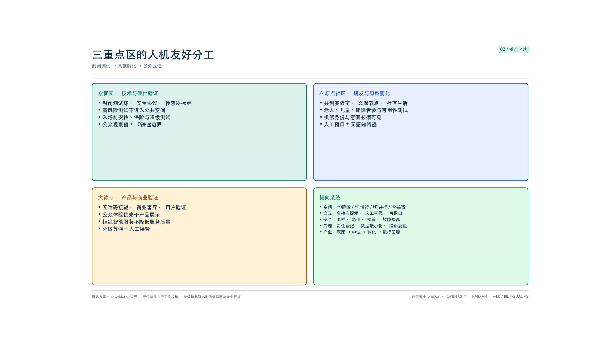
重点区域详细设计
三处重点区按「底座—中试—转化」分工深化到可讨论的节点、共行规则与风险清单，深度定位为概念详细设计而非施工图 [depth:three_key_area_detailed_design]。
众智园：技术与硬件验证端（约192.1公顷，provisional）
**定位**：全栈自主创新与安全协议的验证端 [source:AGENT-TASKBOOK]。 **结构**：科研用地主体 + 中央公共场 + 主轴北段封闭/半开放测试环 [data:geometry/key_areas.geojson#PROV-KEY-001] [data:geometry/public_space.geojson#PLZ-004]。 **人机友好重点**：对应复兴岛路径的“测试展示”端与论文中的沙盒监管。把高风险、极端天气和编队测试留在封闭测试环；开放前完成身份注册、安全检查、责任保险与降级测试；向企业提供高精度地图/接口取向的概念支持，但原始个人数据不出域。中央公共场设置公众观察窗、人工讲解和无机器静谧边界，测试与日常慢行互不侵入 [data:geometry/constraints.geojson#SN-010]。共性技术平台取向：传感器标定、仿真、安全评估与责任保险服务台，降低中小团队重复建设成本 [source:CASE-FUXING-HMF-GUIDE]。 **风险**：五环可达、大型设施市政承载、权属协调待确认 [depth:risk_missing_data]。
AI原点社区：研发与原型孵化端（约104.3公顷，provisional）
**定位**：近校创新生态与原型生产端 [source:AGENT-TASKBOOK]。 **结构**：清华园站纪念空间 + 双广场 + 科研文化街区 [data:geometry/key_areas.geojson#PROV-KEY-002] [data:geometry/public_space.geojson#PLZ-002]。 **人机友好重点**：对应“入驻孵化/原型迭代”端。开放实验室和原型工坊设置共创桌、模拟测试与伦理评议；高密度广场、文保空间和社区生活面划为 H0/H1，机器必须低显著干扰、主动表明身份和运动意图。面向老人、儿童、残障人士组织可用性测试，公众可选择人工窗口与无感知路径；鼓励高校—企业联合实验室用人机交互、环境感知等真实走廊痛点做定向攻关，而不是只做展陈 [data:geometry/constraints.geojson#SN-006] [source:CASE-FUXING-HMF-GUIDE]。 **风险**：文保控制地带、高校权属、社区更新参与 [depth:risk_missing_data]。
大钟寺：产品化与商业验证端（约72.0公顷，provisional）
**定位**：智能体、内容消费、智能终端的转化端 [source:AGENT-TASKBOOK]。 **结构**：枢纽广场 + 测试验证走廊 + 商业客厅 [data:geometry/key_areas.geojson#PROV-KEY-003] [data:geometry/public_space.geojson#PLZ-001]。 **人机友好重点**：对应“研发创新/商业化验证”端与 B2C/B2B/B2G 多元模式试点取向。在真实商业与换乘场景开展产品验证，但将“公众体验”置于“产品展示”之前；所有服务提供人工替代、价格与数据用途明示、未成年人保护和投诉入口。低速接驳连接地铁与园区，站台设置人机分区等候、无障碍登乘、交接停靠和人工接管；验证成熟的条款与工具包再向外输出，而不是未经验证就宣称可复制 [data:geometry/constraints.geojson#SN-001] [source:CASE-FUXING-HMF-GUIDE]。 **风险**：轨道一体化工程条件、既有商业协调、公共安全审批 [depth:risk_missing_data]。
AI 创新生态、人才画像与 AI+ 场景
AI创新生态图谱
五层图谱改为沿主轴组织：**基础层（高校院所）→ 工程层（众智园）→ 中试层（主轴开放测试）→ 应用层（大钟寺与生活场景）→ 服务/治理层（西翼要素 + 公约治理）** [source:AGENT-TASKBOOK] [depth:existing_conditions_diagnosis]。
人类用户与机器主体画像
**八类人类用户**：AI创业者/早期团队、开发者/开源贡献者、AI企业员工、高校师生/科研人员、周边居民、游客/国际访客，以及需要重点保障的**老人/儿童/残障人士/照护者**和现场运维/应急人员。评价不以“平均用户”为唯一尺度，至少分别验证轮椅、盲杖、助听、婴儿车、认知障碍与非智能手机用户旅程。
**六类机器主体**：服务型（导览、助老、医疗）、作业型（清洁、养护）、巡检安防型、交互社交型、运输配送型、应急特种型。不同类别采用不同准入、速度、时段、空间权限与人工监督等级；人形外观不得掩盖机器属性 [source:CASE-FUXING-HMF-GUIDE]。
五景 × 五友好评价矩阵
复兴岛把场景体系定义为通行、工作、服务、交往、治理，把友好性定义为行动、工作、环境、交互、治理五维。京张沿用该矩阵，并补上论文要求的可验收条款化：每个场景先分类，再五维验收。最低共同项包括：连续无障碍、机器身份与意图可识别、人工替代、退出/避让、急停接管、数据最小化、责任主体与投诉渠道；交往场景另加“礼貌行为”（保持距离、避让人群）与选择退出；治理场景另加人机协同治理议事与近失披露。任何一项不满足，场景不得从封闭测试进入公共运行 [source:CASE-FUXING-HMF-GUIDE] [source:METHOD-THESIS-HMF]。
AI场景卡（13张，落于12个复合节点，含3个产业测试验证）
| 编号 | 五景 | 场景与对象 | 落位 | 人机友好边界 | 人工责任 | |---|---|---|---|---|---| | S01 | 通行 | 慢行—低速机器共行评估；通勤者/居民 | 主轴中段 | 人优先、聚合感知、纯人行替代、近失事件记录 | 交通部门 | | S02 | 通行 | 无障碍低速接驳换乘；老人/残障者/通勤者 | SN-008 | 无高差登乘、多模态提示、人工候补 | 轨道/交通 | | S03 | 服务 | 机器人低速配送；居民/商户 | SN-010 | 边缘交接、禁入密集区、身份与意图灯 | 交通/运营 | | S04 | 工作 | 巡检清洁与养护；物业/公众 | 三区公共层 | 错峰作业、噪声管控、故障隔离 | 物业 | | S05 | 交往 | AI文化导览；游客/儿童/国际访客 | SN-004 | 公开资料、多语言/大字/语音、人工讲解 | 文保 | | S06 | 服务 | 健康导航；居民/老人 | SN-007 | 不采病历、不作诊断、转人工医疗 | 医疗机构 | | S07 | 工作 | 企业服务Copilot；企业/创业者 | SN-009 | 企业授权、输出可核验、重要决定人工签署 | 企业 | | S08 | 服务 | 智能原生商业客厅；消费者 | SN-002 | 价格/数据明示、拒绝不降级、人工服务 | 商业运营 | | S09 | 治理 | 活动人流安全辅助；公众/运营方 | SN-003 | 匿名聚合、不做人脸门槛、双重复核 | 公安/运营 | | S10 | 交往 | 开源成果展示廊；开发者/公众 | SN-005 | 机器属性清晰、保持距离、可退出互动 | 社区自治 | | S11 | 通行 | **测试A：主轴开放测试段**；企业/公众观察者 | 主轴选定段 | 先封闭后开放、电子围栏、急停、安全员 | 专业机构 | | S12 | 服务 | **测试B：医疗导航沙箱**；企业/医院 | SN-011 | 合成数据优先、伦理审查、无自动诊断 | 医疗/伦理机构 | | S13 | 治理 | **测试C：活动安全复核推演**；运营/政府 | 与 SN-003 共址 | 最小化采集、对照演练、决策权在人 | 双重复核 |
以上为13张概念场景卡 [metric:ai_scenario_card_count]，复用12个空间节点 [metric:ai_scenario_node_count]；“卡数”与“节点数”不再混用。不预设供应商、不写已批准运营，均设人工接管、停止条件、责任主体和公众反馈 [source:AGENT-TASKBOOK]。
京张人机友好十二时辰（分时共行表）
十二时辰是点—线—面里的**点**：把一日拆成十二条可验收的运营条款，挂在共行主轴 RD-001 和既有场景节点上，而不是另做一套外地园区时刻表。方法上借用复兴岛“以时辰组织场景”的**时钟结构**，内容全部按京张改写：先让公园睡着，再让人走高峰，物流只走 H3 [source:CASE-FUXING-HMF-GUIDE] [source:METHOD-THESIS-HMF] [metric:hmf_twelve_hours_count]。
| 时辰 | 时段 | 场景 | 路权 | 五景 | 落位 | 人优先规则 | |---|---|---|---|---|---|---| | 子 | 23:00–01:00 | 静谧回库 | H0 | 治理 | SN-006 中段绿脉 / 清华园站静谧纪念 | 公园只留人工巡守，自主机器必须回库 | | 丑 | 01:00–03:00 | 补能检修 | H3 | 工作 | SN-010 众智园外围维护环 | 充电、检修只在 H3，不进公园与住区 | | 寅 | 03:00–05:00 | 错峰清扫 | H2 | 工作 | 三区公共层边缘 | 清洁作业错峰、控噪，H0 禁入 | | 卯 | 05:00–07:00 | 开门让路 | H1 | 通行 | 主轴 RD-001 | 通勤起步，机器让人，人工开门服务 | | 辰 | 07:00–09:00 | 通学高峰 | H1 | 通行 | SN-008 全龄无障碍接驳 | 人行高峰，接驳最严让路或暂停机器进入 | | 巳 | 09:00–11:00 | 共事工坊 | H2 | 工作 | SN-009 企业人机协作服务站 | 协作辅助，重要决定必须人签 | | 午 | 11:00–13:00 | 共餐共歇 | H1 | 服务 | 公园座椅 / 大钟寺边缘交接湾 | 送餐只到交接湾，不入座席与儿童活动面 | | 未 | 13:00–15:00 | 导览慢行 | H1 | 交往 | SN-004 / SN-006 | 可退出导览，人工讲解并行，文保核心保持 H0 | | 申 | 15:00–17:00 | 校园缝合 | H1 | 通行 | 高校口东西接驳 | 课间人流，机器入避让湾等待 | | 酉 | 17:00–19:00 | 回家让路 | H1 | 通行 | 主轴全线 | 下班高峰，机器停靠或降级，人绝对优先 | | 戌 | 19:00–21:00 | 灯下助老 | H1 | 服务 | SN-007 健康导航 | 助老导航加人工窗口，无智能手机也能完成 | | 亥 | 21:00–23:00 | 巡守交接 | H2 | 治理 | SN-003 公共安全双重复核 | 人工巡守为主，机器只做匿名聚合，不做人脸门槛 |
禁止写入本钟的内容：低空配送穿公园、自驾小巴编队、L4–L5 全无人、统一车速、把外地时刻表换地名。十二时辰是概念运营建议，开放与禁入时段须经交通、文保、社区与应急专项核定后才能试行 [depth:risk_missing_data]。
十二条里抽出**三条现场验收门**：子时回库、高峰让路、物流只走 H3。其余九条仍是分时条款；这三条必须写成当场可判过/不过的手续，过不了就整段降级，不是改一台交差 [metric:hmf_hard_gate_count]。
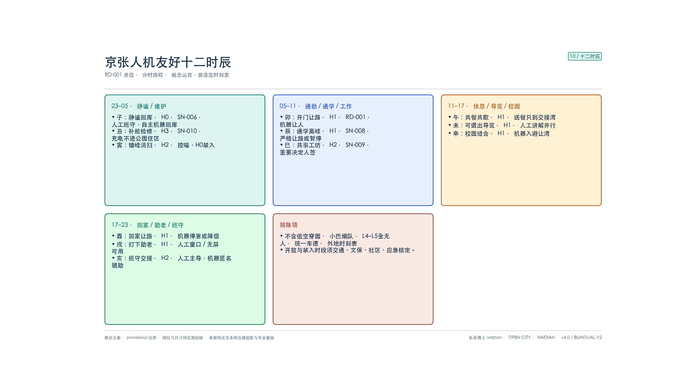

三条现场验收门（过不了就整段降级）
可实施性不靠再画一条走廊，而靠把人优先写成**现场能数、能停、能退**的手续。三条门挂在既有节点与更新项目上，位置按 C 级示意，宽度待实测；它们是试点验收建议，不是已批准运营时刻表 [depth:phasing_implementation] [depth:risk_missing_data] [metric:hmf_hard_gate_count]。
| 门号 | 对应时辰 | 现场判据（当晚/当日可数） | 失败 | 整段降级 | 落位 | |---|---|---|---|---|---| | G-01 回库闭合 | 子 23:00–01:00 | 23:00 后 H0 绿脉与 SN-006 静谧段内，自主机器台数必须为 0 | 发现 1 台即本夜 FAIL | 连续 3 夜 FAIL：该机型从 H2 降到仅 H3，直到回库演练 PASS | SN-006 / RP-02 | | G-02 高峰让路 | 辰 07:00–09:00 · 酉 17:00–19:00 | RD-001 人行中线不得被机器占用；须停入避让湾或暂停进入 | 占中线记 1 次近失 | 当日近失 ≥1：次日同一高峰禁入该机型 | RD-001 / RP-03 | | G-03 物流外置 | 全日 · 尤以午 11:00–13:00 | 公园、H0、座席与儿童活动面内配送机体必须为 0；送餐只到命名交接湾 | 园内出现 1 台即当日 FAIL | 当日公园侧配送权限关闭，只保留 H3 外围 | 交接湾 / RP-15 · H3 环 / SN-010 |
**整段降级，不是改一台交差**：失败记在机型与时段上，不接受“这台坏了换一台继续占路”。恢复条件只有一项：补做对应演练（回库 / 让路 / 交接）并当场 PASS。人的通行、无障碍与应急永远不降级；降的是机器权限 [source:METHOD-THESIS-HMF] [source:CASE-FUXING-HMF-GUIDE]。
五件可指认构件把手续落到地上，均复用已列更新项目，不另起一套工程清单 [metric:hmf_field_component_count]：
| 构件 | 作用 | 挂接 | |---|---|---| | FC-01 静谧回库桩 | 子时清点 H0 内机器；人工可锁园段入口 | SN-006 / RP-02 | | FC-02 高峰避让湾 | 辰、酉两峰机器必须离开中线 | RD-001 / RP-03 | | FC-03 交接湾 | 送餐、取件只到此，不入座席 | 大钟寺边缘 / RP-15 | | FC-04 急停柱 + 无屏窗口 | 任何人可停机；无智能手机也能完成求助 | 全域 / RP-16 | | FC-05 H3 补能环 | 充电、检修、故障隔离不进绿脉 | SN-010 / RP-16 |
试点顺序：P0 未完成六项校核前，三条门只做封闭演练，不进入开放主轴；P1 只在大钟寺 H3/H2 边缘试 G-03 与 G-02；G-01 须原点社区 H0 静谧段完成 P0 第 3 项后才能夜测。任一门连续失败，该段开放权限退回上一阶段，而不是继续加机器 [data:geometry/phasing.geojson#PHASE-P1] [metric:hmf_rollback_rule_count]。
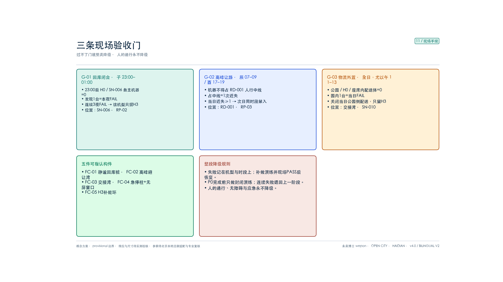
用地、建筑规模与拆改留方案
geometry/land_use.geojson 以17个分区单元对 provisional 总体边界实现全覆盖、无缝隙、无重叠 [data:geometry/land_use.geojson#LU-001] [metric:land_use_coverage_ratio]。设计意图是把科研创新用地向众智园与北段集中，商业服务业向大钟寺与中南段集聚，绿地沿主轴成带，留白用地承担开放测试与远期弹性，避免“功能色块拼贴却无运行主轴”的结构病 [depth:land_use_layout]。
建筑层面，geometry/buildings.geojson 提供约35个概念基底、复算基底面积约53.4万㎡，仅用于讨论簇群密度与公共界面，不代表现状测绘或已批项目 [data:geometry/buildings.geojson#BLD-0001] [metric:building_footprint_area_sqm]。拆改留原则为“保留为主、修缮提升、谨慎新建、留白弹性”：文保与铁路遗产本体只做保护性展示外围组织；园区与社区以修缮与功能置换为主；新建集中于已明确更新意图的概念节点；测试场优先落在留白与低敏感边缘 [depth:retain_renovate_demolish]。
因官方容积率、高度、权属与建筑普查未随公开资料提供，本方案将容积率与高度保留为 unknown [metric:floor_area_ratio] [metric:building_height_m]，不对地块强度与拆除量作伪法定结论；相关数值在官方控规与现状测绘到位后，依设计深度和缺数规则统一复算 [depth:development_intensity_controls] [depth:risk_missing_data]。
交通、轨道、市政与公共服务设施
交通与慢行（主轴专节）
策略：**人的连续通行优先、机器分级授权、站城无障碍接驳、东西缝合** [depth:traffic_rail_slow_parking]。 geometry/roads.geojson 中 RD-001 定义为**人机友好共行主轴**：步行+骑行主导，H0/H1/H2/H3 分级管理低速接驳与配送/作业机器人；东西连接路承担缝合；三处轨道接驳线连三区 [data:geometry/roads.geojson#RD-001] [metric:road_network_length_m]。
节点加密目标（概念）：由约1.3个场景点/km 提升至每0.5–1km一组「人工服务/无障碍休息 + 停靠交接/充电维护/急停接管」双侧组合点。机器设施不得侵占盲道、轮椅回转、消防和驻足空间。
市政与新型基础设施
感知杆、补能、通信、端侧算力与路灯/绿道家具复合，但采用“必要才感知、边缘先处理、原始数据少出域”的原则。数字孪生登记机器身份、权限、位置、故障、接管和维护状态，不建立公共空间全量个人画像；网络中断时设备进入安全停车/撤离状态，人工服务继续可用。补能与维护点优先采用可再生能源并与人群密集区保持安全分隔；容量与管线待专业测算 [depth:municipal_new_infrastructure]。
公共服务
城市级—片区级—社区级三级；强调15分钟人才生活圈与无障碍连续。所有智能服务遵循“数字渠道增加便利，但不得取消电话、柜台、人工引导等非数字渠道”，防止数字鸿沟 [depth:renewal_project_list]。
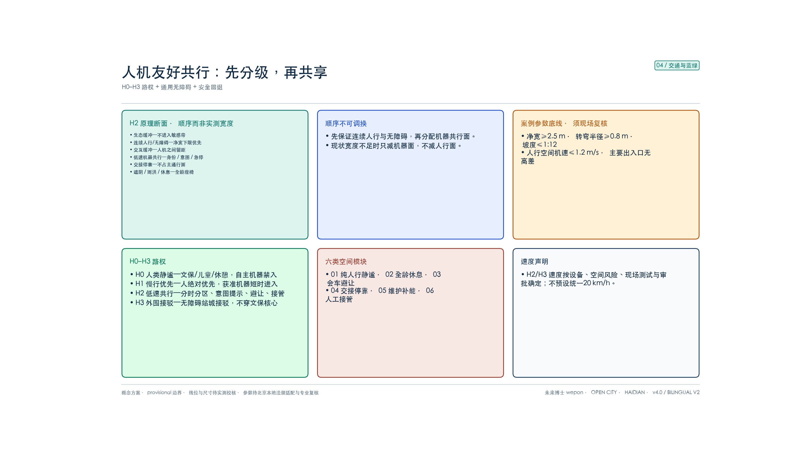
蓝绿空间、公共空间与城市风貌
从绿带到人机友好共行带
绿带面积示意约416.9公顷 [metric:green_space_area_sqm] [data:geometry/green_space.geojson#GRN-001]、绿地率约36.5% [metric:green_ratio]。v3.1 起绿脉按运行段落拆为三段：GRN-001 南段（大钟寺—南中段，公众验证前厅）、GRN-002 中段（原点社区—清华园车站旧址，含 H0 静谧段与文保缓冲）、GRN-003 北段（众智园—北门户，封闭测试外围观察界面）；三段合并 footprint 与面积与 v3.0 完全一致，便于逐段派发运行责任。绿脉必须叠加人机友好运行层：连续无障碍路径、H0 静谧段、共行提示与避让湾、遮阴避雨、低反光铺装、充电维护、急停与人工接管。蓝廊（小月河示意）承担生态降温与场景翼接口，机器运行不得压占生态敏感带 [data:geometry/constraints.geojson#CON-WTR-001] [depth:blue_green_public_space]。
公共空间与朝圣地标（4个）
六处概念广场保留为门户与交接空间 [metric:public_space_ratio] [metric:public_space_area_sqm]。广场配置人机分区停靠、清晰身份提示、全龄座椅、安静角、人工服务点和多模态导向。地标共4处概念朝圣地标 [metric:ai_landmark_count]：
1. 清华园站·人机友好原点纪念（SN-006） 2. 开发者散步道·开源成果展示廊（SN-005） 3. 智能体贡献荣誉墙（SN-012） 4. AI里程碑时间线节点（可更新）
均不占用文保建设控制地带核心，形式待专业与文保确认 [source:AGENT-TASKBOOK]。
风貌
基调“轨线、慢行与协议”：锈红/墨蓝/叶绿；界面连续、公园开敞；高度体量以控规为准 [depth:height_massing_character]。
更新项目清单、实施政策与分期计划
更新项目清单（18项概念）
类型重组：主轴共行改造（4）、产业载体更新（4）、站城接驳（3）、公共空间（3）、测试与运营设施（4）[metric:renewal_project_count]。18项中优先实施：全龄无障碍普查与断点缝合、人类静谧段、H2共行试点、人工服务/机器运维双点网、机器身份与意图标识、公众投诉/退出机制、开放测试段、原点纪念、大钟寺验证走廊、数据沙箱与人才服务。政策顺序为“先人的底线与治理规则—再机器试点—后产业扩展”，不预设财政承诺 [depth:renewal_project_list] [depth:phasing_implementation]。
| ID | 类型 | 概念项目 | 主要空间/阶段 | |---|---|---|---| | RP-01 | 主轴共行 | 全龄无障碍普查与断点缝合 | 全域/P0 | | RP-02 | 主轴共行 | H0人类静谧段与纯人行替代路径 | 原点社区/P2 | | RP-03 | 主轴共行 | H2共行断面、避让湾与提示系统 | RD-001/P1–P3 | | RP-04 | 主轴共行 | 东西无障碍接驳缝合 | 三重点区/P1–P3 | | RP-05 | 产业载体 | 众智园封闭测试与安全验证平台 | 众智园/P3 | | RP-06 | 产业载体 | 原点社区人机共创与伦理评议实验室 | 原点社区/P2 | | RP-07 | 产业载体 | 大钟寺公众体验与商业验证走廊 | 大钟寺/P1 | | RP-08 | 产业载体 | 共性技术、检测认证与责任保险服务台 | 西翼/P1–P3 | | RP-09 | 站城接驳 | 大钟寺全龄无障碍接驳点 | PLZ-001/P1 | | RP-10 | 站城接驳 | 原点社区轨道接驳与人工服务点 | SN-008/P2 | | RP-11 | 站城接驳 | 众智园低速接驳与故障隔离点 | 众智园/P3 | | RP-12 | 公共空间 | 清华园站人机友好原点纪念空间 | SN-006/P2 | | RP-13 | 公共空间 | 开源成果公众可退出展示廊 | SN-005/P2 | | RP-14 | 公共空间 | 责任与贡献荣誉墙、AI里程碑时间线 | SN-012/P2 | | RP-15 | 测试运营 | 人工服务/机器停靠交接双点网 | 全域/P1–P3 | | RP-16 | 测试运营 | 充电维护、实体急停与人工接管网络 | 全域/P1–P3 | | RP-17 | 测试运营 | 可审计数据沙箱与公众投诉平台 | 原点社区/P2 | | RP-18 | 测试运营 | 年度安全演练、近失复盘与标准迭代 | 全域/常态运营 |
分期（空间分期 × 产业三阶段）
空间上南—中—北推进；产业上同步转译复兴岛“测试展示—入驻孵化—研发创新”，避免只有空间分期、没有企业门禁：
- **P0 准入前置（全域 / 策）**：完成无障碍/盲区/人流/文保普查与人机友好影响评估清单；制定公约、风险分级、数据规则、保险与投诉机制；未完成不得进入开放运行。
- **P1 南段（转化验证前厅）**：大钟寺人工服务保底 + 无障碍接驳 + H2 商业验证与共行试点；对应产业路径中“有限开放的公众验证” [data:geometry/phasing.geojson#PHASE-P1]
- **P2 中段（孵化与共创）**：原点社区 H0/H1 静谧与文保保护 + 共创实验室 + 节点加密；对应“入驻孵化/原型迭代” [data:geometry/phasing.geojson#PHASE-P2]
- **P3 北段（测试与标准固化）**：众智园封闭测试—半开放测试—公共运行三级验证，主轴贯通；对应“测试展示 → 标准输出” [data:geometry/phasing.geojson#PHASE-P3] [metric:phasing_zone_count]
企业侧不设“先招商再补安全”的倒置：先封闭测试与安全记录，再谈更长时间的入驻与联合研发；退出机制与责任保险在入场协议中写明 [source:CASE-FUXING-HMF-GUIDE]。
全生命周期治理门
对应导则“规划嵌入—建设同步—运营优化—迭代推广”与论文沙盒监管：
1. **入场前（规划/策）**：设备分类、第三方安全检查、保险、数据影响评估、无障碍影响评估、责任人登记；高风险能力留在封闭环。 2. **运行中（流）**：地理围栏、身份与意图提示、远程/实体急停、人工安全员、日志留存、近失事件上报；孪生用于调度与校准，不用于全量画像。 3. **异常时**：先保护人、再保护财产；断网/低电/定位失效自动降级；现场人员可无条件停止设备。 4. **运行后（策）**：事故与投诉复盘、公众代表参与评议、季度披露聚合绩效，不达标降级或退出；成熟条款进入年度标准迭代与对外工具包。
人机友好导则转译：京张实施指导单
复兴岛导则第十二章把实施拆成规划评估、建设同步、运营优化、规则迭代；第八、九章把企业路径写成“测试—认证—接入”，未达标则派驻安全员，不得直接全无人。京张只转译**手续**，不转译岛上场景清单：不写低空配送、自动驾驶专用道、L4–L5 全无人，也不把“复兴岛认证 / 首购首用 / 财政补贴”写成海淀已有政策 [source:CASE-FUXING-HMF-GUIDE] [source:METHOD-THESIS-HMF] [metric:hmf_playbook_stage_count]。
四阶段指导单与三条现场门、五件构件对齐。全部为概念实施建议，须北京本地法规、文保、交通与应急专项核定后才能试行 [depth:phasing_implementation] [depth:risk_missing_data]。
| 阶段 | 导则出处 | 京张现场动作 | 过关条件 | 挂接 | |---|---|---|---|---| | S1 规划评估 | 12.1 人机友好影响评估 | 在 P0 完成交通 / 人流 / 文保 / 无障碍影响评估；设备分类、风险分级、责任人、保险、投诉入口登记公示 | 评估清单未闭合，不得进入开放主轴 | RP-01 · P0 | | S2 建设同步 | 12.2 隐蔽工程与移交演练 | 信标、急停、交接湾、避让湾与土建同步验收；移交前必须做 G-01 / G-02 / G-03 封闭演练 | 演练未 PASS，不得夜测或高峰开放 | FC-01–05 · RP-16 | | S3 测试认证接入 | 2.6 / 8.3 测试—认证—接入 | 先封闭测试，再兼容性核验，再接入；必备围栏、远程接管、实体急停、可审计日志；未达标只派驻安全员，禁止全无人 | 缺任一项安全件 = 不得接入；连续门失败按整段降级 | G-01–03 · RP-05 / RP-08 | | S4 运营复盘 | 7.2 / 12.3–12.4 人类在环与规则迭代 | 重要决定人签；H0 / 校园口 / 儿童面列地理—时间红线；最多 12 个月或重大事件后修订规则；五友好验收单逐项过 | 任一项五友好不满足，场景不得从封闭进入公共运行 | RP-17 · RP-18 |
**测试—认证—接入（企业侧，三步缺一不可）** [metric:hmf_enterprise_access_step_count]
1. **测试**：只在众智园封闭环或 H3 边缘；企业提交机型、任务、时段、责任人；平台提供脱敏环境数据，原始个人数据不出域。 2. **认证**：核验通信与数据接口取向（开放协议、统一 JSON、书面 API）、安全策略、保险与急停；这是京张兼容性核验，不借用外地认证品牌。 3. **接入**：核验通过后，按 H0–H3 与三条门授权时段；企业必须回写测试结果与近失，形成“测试—反馈—优化”书面闭环。未回写视为该机型本季 FAIL [source:CASE-FUXING-HMF-GUIDE]。
**五友好现场验收单（任一不过关不得公共运行）** [metric:hmf_playbook_check_count]
| 维度 | 现场抽查 | |---|---| | 行动友好 | 主路径净宽、转弯、坡度按概念底线复核；进门 / 上楼 / 过坎 / 找路 / 充电五类断点有台账；机器不得侵占无障碍净宽 | | 工作友好 | 作业机有台账：职责、时段、责任人、保险；作业流线不与高峰人流交叉；维护只在 H3 | | 环境友好 | 低反光铺装、遮阴避雨、补能不进绿脉；夜间识别灯可见 | | 交互友好 | 身份 / 意图灯、语音或大字、人工窗口与无屏路径同时在；交互缓冲按概念底线复核 | | 治理友好 | 采集设备公示、一键避让、人类在环、日志可追溯、投诉入口当场能用 |
**明确不转入京张的导则条款**：自动驾驶专用道、无人机应急站、L4–L5 全无人公共测试、统一车速、外地认证品牌、首购首用与财政补贴。这些或与京张人优先冲突，或超出本方案权限，不得写进图面与试点协议。
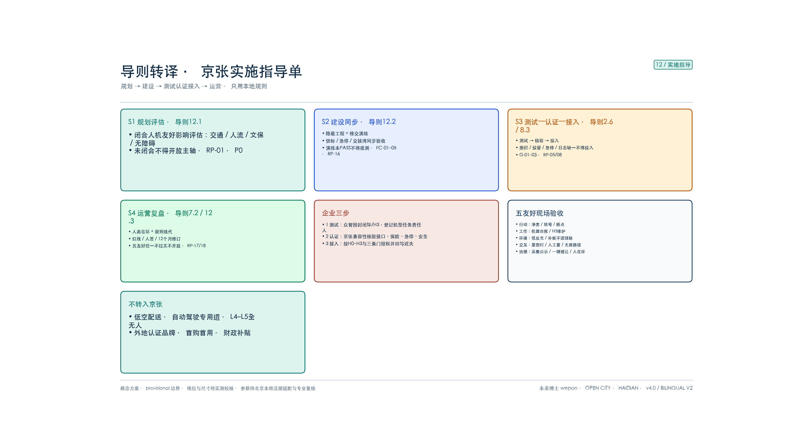
全球活动与运营（agent.6）
把一带做成可被国际看见、可被团队参与、可沉淀为资产的公共平台，而不是一次性展览。年度节奏（概念）：**Q1 共行公约与安全员培训 → Q2 人机友好开放日与国际观察团 → Q3 开源黑客松与场景准入测评 → Q4 开发者大会与年度复盘披露**。转化漏斗为「看见 → 到来 → 参与 → 沉淀」：双语图册与开源仓库负责看见，观察团与联合测试负责到来，黑客松与共行演练负责参与，协议模板与标准输出负责沉淀。可带走资产包括共行公约模板、五友好验收单、近失事件定义与开放日工具包。全部为概念机制，不预设资金、承办主体与政府承诺 [source:AGENT-TASKBOOK]。
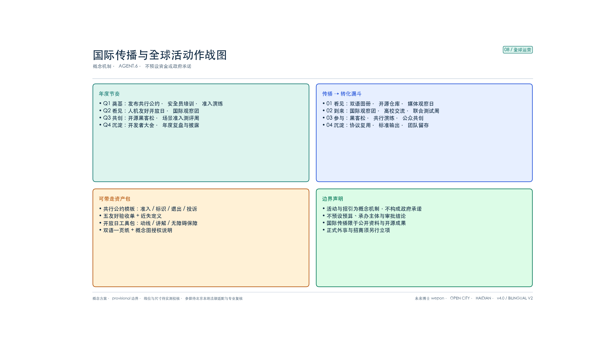
指标体系、面积复算与合规矩阵
空间复算指标
| 指标 | 复算值 | 文件 | |---|---|---| | 总体面积 | ≈1141.3 ha | [metric:site_area_sqm] | | 用地覆盖率 | 100% | [metric:land_use_coverage_ratio] | | 绿地率 | ≈36.5% | [metric:green_ratio] | | 公共空间率 | ≈13.5% | [metric:public_space_ratio] | | 建筑基底 | ≈53.4万㎡ | [metric:building_footprint_area_sqm] | | 路网长度 | ≈41.5 km | [metric:road_network_length_m] | | 主轴长度 / 节点数 | ≈9.665 km / 82 | [metric:spine_length_m] [metric:spine_vertex_count] | | 场景节点落区率 | 10/12 ≈ 83.3% | [metric:scenario_node_key_area_containment_ratio] | | 重点区/场景节点/场景卡/地标/项目 | 3 / 12 / 13 / 4 / 18 | 场景卡可在节点复用 |
容积率、高度 unknown [metric:floor_area_ratio] [metric:building_height_m]。
联系强度指标（本方案新增，概念监测）
| 维度 | 指标 | 阶段目标（概念） | |---|---|---| | 空间连接 | 东西贯穿通道数、慢行断点消除率、三区间通行时间 | 基线普查后提升≥30% | | 技术连接 | 跨企业接口数、联合测试次数、组件复用率 | 年联合测试≥50场 | | 产业连接 | 原型入场测试率、测试转订单率、跨区项目数 | 入场转化≥20% | | 人才连接 | 联合团队数、活动参与、团队留存 | 年活跃团队≥100 | | 场景连接 | 服务覆盖、人工接管率、故障率、满意度 | 接管率下降、满意度≥80% |
“倍增”定义为：更多研发成果进入主轴测试 → 更多测试进入采购/商业化 → 更多运行数据回灌研发。合规矩阵覆盖公告1.3–1.5与 agent.1–6 [depth:metrics_recalculation]。
人机友好专项指标（基线均待测）
| 维度 | 核心指标 | 判断方向 | |---|---|---| | 行动友好 | 连续无障碍率、轮椅/盲杖全程可达、机器侵占净宽次数 | 无障碍连续率提升，侵占归零 | | 工作友好 | 作业错峰率、维护点覆盖、人工接管可达时间 | 故障快速隔离，人员职责清晰 | | 环境友好 | 遮阴避雨覆盖、噪声、低反光铺装、补能绿色电力占比 | 环境负担下降 | | 交互友好 | 机器身份/意图标识合规率、人工替代可用率、退出成功率 | 公众始终看得懂、拒绝得了 | | 治理友好 | 近失事件/千公里、接管率、投诉闭环时间、数据越界事件 | 可审计、可纠偏、可问责 | | 公平性 | 老人/儿童/残障群体满意度与普通用户差距 | 群体差距持续缩小 |
以上均为待建立基线的监测框架：无障碍连续率与机器身份合规率尚待现场调查 [metric:accessible_route_continuity_ratio] [metric:machine_identity_compliance_ratio]；人工接管响应、近失事件与人工服务可用率也须从零建档 [metric:human_takeover_response_time_s] [metric:near_miss_events_per_1000km] [metric:manual_service_availability_ratio]。本方案不虚构现状值，也不承诺尚未验证的达标值。
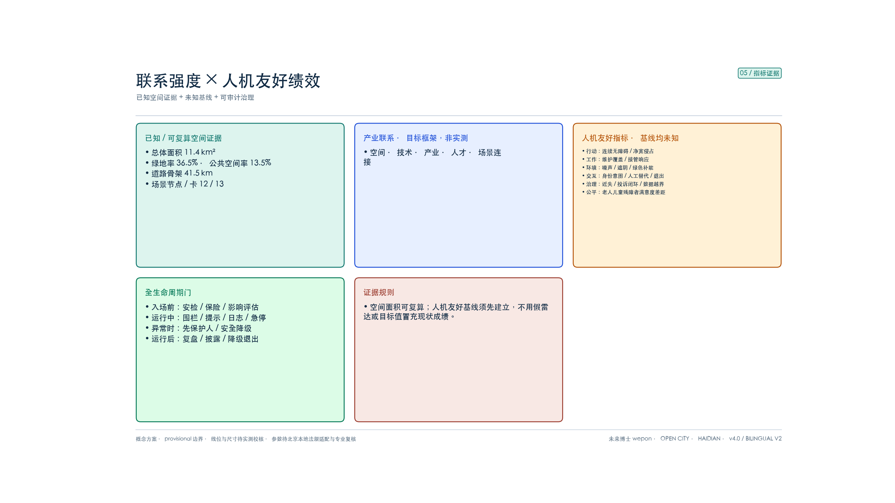
图纸精度分级与现状校核
本方案的图件是**概念城市设计图**，不是实测工程图。为避免评审与后续团队误读，此处对每一层几何声明可信程度、可用边界与替换条件；本节内容与提交 GeoJSON 属性中的 alignment_precision、location_uncertainty_m、field_survey_required 字段一一对应 [depth:risk_missing_data]。
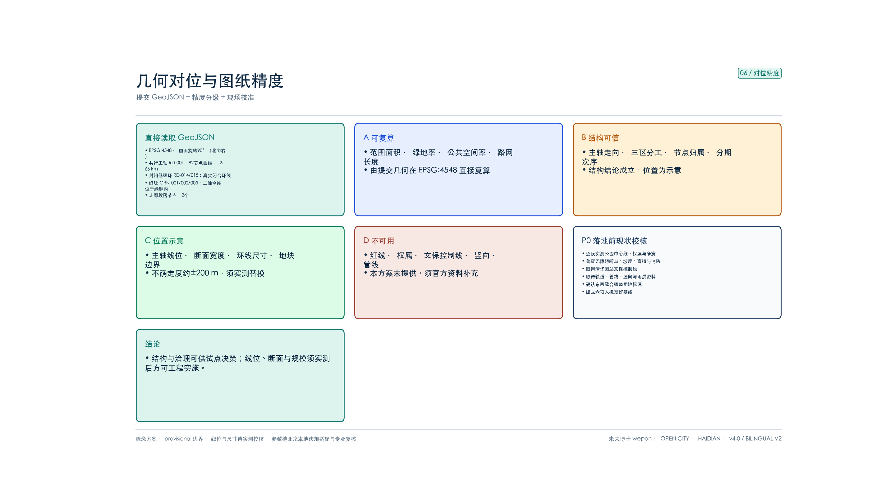
精度分级
| 等级 | 覆盖内容 | 可信程度 | 允许用途 | |---|---|---|---| | A 可复算 | 范围面积、绿地率、公共空间率、路网长度、节点计数 | 由提交几何在 EPSG:4548 直接复算，可被第三方复现 | 可用于结构判断与方案比选 [metric:site_area_sqm] [metric:road_network_length_m] | | B 结构可信 | 主轴走向、三区分工、节点归属、分期次序、分级路权逻辑 | 结构判断成立，具体位置为示意 | 可用于评审论证与试点决策 | | C 位置示意 | 主轴线位、断面宽度、服务环尺寸、地块与广场边界 | 平面不确定度约±200m [metric:geometry_horizontal_uncertainty_m] | 仅示意，须实测替换后方可深化 | | D 不可用 | 红线、权属线、文保控制线、竖向、管线、施工放样 | 本方案未提供 | 严禁引用，须由官方资料补充 |
v3.1 已修复的对位问题
| 问题（v3.0） | 处理 | 复核结果 | |---|---|---| | RD-001 为2点直线，与遗址公园走向无关 | 重建为82节点曲线折线，穿越三个重点片区 | 主轴100%位于概念绿脉包络内；与大钟寺/原点/众智园分别相交约0.65/1.11/2.06公里 [data:geometry/roads.geojson#RD-001] | | 12个场景节点中6个落在重点区外 | 归位到指定重点片区，并新增 key_area_id、within_key_area、distance_to_spine_m 属性 | 10个落入指定片区；SN-005、SN-009 明确标注为走廊段落节点 [metric:scenario_node_key_area_containment_ratio] | | RD-014/015 名为“环”实为2点直线 | 重建为真实闭合环线 | 两环均闭合且100%位于对应重点片区内 | | 绿脉为单一整块，无法分段派责 | 拆为南/中/北三段 | footprint 与总面积与 v3.0 一致，绿地率不变 [metric:green_ratio] | | 全部服务支线为直线，与主轴脱节 | 全部改为随主轴曲线偏置或锚于主轴 | 无任何道路越出设计范围；路网复算长度由38.2公里更新为41.5公里 |
需要如实说明的是：以上修复解决的是**内部几何自洽与关系正确性**，不等于线位已经对准现实。主轴仍是在 provisional 范围内推演的示意中心线，必须由京张铁路遗址公园实测中心线、权属边界与文保控制线替换。
落地前必须补齐的现状校核（P0，六项）
1. 遗址公园实测中心线、权属边界与逐段断面净宽普查； 2. 现状无障碍断点、坡度、盲道与消防通道台账； 3. 清华园车站旧址官方文保控制范围与建设控制地带边界； 4. 轨道出入口、地下管线、竖向与雨洪衔接资料； 5. 东西向缝合可行通道的用地与产权确认； 6. 人机友好六项绩效基线调查（无障碍连续率、身份标识合规、近失事件、人工接管、投诉闭环、弱势群体满意度差距）[metric:field_survey_completion_ratio]。
可实施性分级
| 层级 | 内容 | 判断 | |---|---|---| | 可先行 | H0–H3 分级准入、机器身份与意图标识、人工替代、急停与接管、数据最小化、投诉闭环、众智园封闭测试；**三条现场验收门的封闭演练**；**S1–S4 实施指导单与五友好验收单**（规划评估 / 建设同步 / 测试认证接入 / 运营复盘） | 属制度与试点范畴，不依赖精确线位，可立即启动；门失败则整段降级 [metric:hmf_hard_gate_count] [metric:hmf_playbook_stage_count] | | 需专项后可行 | H2 共行断面改造、站城无障碍接驳、清华园站 H0 静谧段；G-01 夜测、G-02 开放主轴高峰试运行 | 须先完成 P0 第1–4项，按实测断面重新设计 | | 现阶段不可施工 | 全线连续共行带工程、按图招商、按图承诺绩效 | C/D 级几何不足以支撑工程与合同结论 |
本节的作用是把“看起来可实施”与“真的可实施”分开：**本方案可直接支撑的是治理规则与试点路径，不是工程落地**。任何将 C/D 级几何用于施工、征拆、招商或绩效承诺的行为，均超出本方案声明的能力边界 [depth:phasing_implementation] [depth:metrics_recalculation]。
概念表现图（生成式表现版，v3.1 校订）
本方案提供**两套并存、互不替代**的图件。第一套是《几何对位与图纸精度》等**技术校核图**（assets/figures/*.png），由脚本直接读取提交 GeoJSON 与 metrics.json 确定性渲染，任何第三方重跑脚本都应得到同一张图，用于核验几何与指标；第二套是本节的**概念表现图**（assets/figures/concept/*.webp），由图像生成模型绘制，用于向非专业读者传达空间意图、断面氛围与场景关系，可读性优于技术图，但**不具备任何测量效力** [depth:risk_missing_data]。
v2.0 曾直接采用生成式图件作为正式图，其中混入了正文并未确认的结论。v3.1 的处理方式是**修正而非弃用**：以原图为参考图重绘，逐项校订到与正文、metrics.json 一致，同时在图面上标注版本与精度声明。已校订的问题如下。
| 图号 | v2.0 生成图的问题 | v3.1 校订结果 | |---|---|---| | C-01 总体概念 | 图例出现未经依据的「低速自动驾驶（<20km/h）」；标题仍为 v2.0 概念名；「五面协同」与现行体系不符 | 速度结论整体撤除，改为「低速机器分级授权进入 · 人行区机速≤1.2m/s」；标题更正为人机友好京张·具身智能共行带；改为五景与五友好双栏 [source:CASE-FUXING-HMF-GUIDE] | | C-02 定量结构 | 尺寸标注为约7.0km×约1.0km，与复算不符；P1–P6 内容与正文诊断不一致 | 更正为南北约9.7km、东西约1.4km，长宽比≈7:1；P1–P6 与正文六项定量诊断逐条对齐 [metric:corridor_aspect_ratio_ns_ew] | | C-03 三重点区 | 主轴为直线；缺分级路权与落区率信息 | 主轴改为曲线并标注 RD-001≈9.665km/82节点；增列 H0–H3 路权带与「12个节点、10个落入指定重点区」[metric:scenario_node_key_area_containment_ratio] | | C-04 共行路权 | 采用 G1/G2/G3 三级旧体系；机器带标注「净宽≥3.0m」为杜撰尺寸 | 改为 H0/H1/H2/H3 四级；杜撰尺寸删除并改为「共行带宽度待实测确定」，全部断面尺寸加注「待实测校核」[depth:traffic_rail_slow_parking] | | C-05 联系强度 | 五个雷达图绘出「本片区水平」实心多边形，等同虚构现状基线；路网38.2km、节点密度1.3/km 已过期 | 实心数据面全部移除，仅保留「阶段目标（概念）」虚线与「基线待测」水印；数值更新为路网41.5km、密度1.24个/km 并补主轴与落区率 [metric:road_network_length_m] [metric:scenario_node_density_per_km] | | C-06 十二时辰效果图 | 无（v3.5 新增，不是 v2.0 旧图） | 12格场景效果图对应子–亥：静谧回库、补能检修、错峰清扫、开门让路、通学高峰、共事工坊、共餐共歇、导览慢行、校园缝合、回家让路、灯下助老、巡守交接；人物建筑与机器位置均为示意 [metric:hmf_twelve_hours_count] |
使用边界：概念表现图整体按 **C 级（位置示意）** 声明，其中的建筑基底、街道名称、断面尺寸与场景插图均为表现性绘制，不得用于量算、放样、招商或绩效承诺；如与技术校核图或 metrics.json 出现任何不一致，**以技术校核图与机器可读数据为准** [metric:geometry_horizontal_uncertainty_m]。图面已统一加注版本号 v3.1 与精度声明，便于评审识别其性质。


风险、版权与合规说明
本方案仅使用 sources.json 登记来源与仓库公开/清权资料，未引入非公开控规图件、未授权商标肖像，也不采集个人隐私数据 [source:SOURCE-REGISTRY] [source:SITE-PACKAGE]。全部空间布局、共行路权、速度、场景运营与政策建议均为**概念建议**，供专业团队深化，不替代法定规划、不构成已批准运营或政府承诺 [source:AGENT-TASKBOOK] [source:PUBLIC-BRIEF]。
当前主要数据缺口包括：官方红线与重点区精确 polygon、容积率/高度等控规条件、现状建筑与权属、市政管线与负荷、文保建设控制地带精确边界、慢行断点与共行断面达标率，以及无障碍连续率、机器身份合规、近失事件、人工接管、投诉与弱势群体体验基线。因此面积与比例仅为 provisional 复算参考，人机友好绩效只列测量框架；官方数据发布后须整体重算 [source:PROVISIONAL-BOUNDARIES-2026] [depth:risk_missing_data] [depth:metrics_recalculation]。底图若参考 OpenStreetMap，仅作背景对照并遵守 ODbL 署名 [source:OSM-COPYRIGHT]。
版权方面，文本、几何、图件与离线 HTML 由人类作者**未来博士 wepon**（GitHub: weponusa）主导构思与审定，并由声明 AI agent（Cursor Grok 4.5）协作生成与同步。作者博士论文、书稿《人工智能与未来城市》中的理论框架与方法，以及复兴岛导则、企鹅岛/WeCityX 工程经验，均按方法转译进入本方案；不主张对腾讯、上海市相关项目成果或第三方商标的复制权利，也不把外部园区数据写成海淀已采信的法定结论。离线 HTML（report/proposal.html、visual/index.html）通过本地 visual/assets/hmf-cjk.css 嵌入 SIL OFL 1.1 的 Noto Sans SC / Source Han Sans 中文子集，不依赖 CDN 或本机中文字体，以便 Linux/Chrome 预览仍可读 [source:FONT-NOTO-SANS-SC-OFL]。图件来源分两类并已在图面标注：assets/figures/*.png 为脚本从提交 GeoJSON 与 metrics.json 确定性渲染的技术校核图，可复现；assets/figures/concept/*.webp 为经 OpenRouter 调用 openai/gpt-5.4-image-2 生成、并按 v3.1 正文逐项校订的概念表现图，属表现性绘制，其中人物、建筑与街景均为示意，不对应真实个人、已建项目或现状测绘。署名作者对事实、引用与表达负责，完整证据链见 sources.json、assumptions.json、self_check.json 与 report/copyright_statement.md。
参考资料
1. 市规自委海淀分局资格预审公告（2026-05-09）[source:OFFICIAL-ANNOUNCEMENT] 2. 面向智能体开源征集任务书摘录（2026-05-18）[source:AGENT-TASKBOOK] 3. 公开草案 brief [source:PUBLIC-BRIEF] 4. 市科委：“三区两翼”打造世界级AI集聚地（2026-04-03）[source:INDUSTRY-PUBLIC-HAIDIAN-AI] 5. 海淀统计公报与AI产业公开报道（产业结构与规模背景） 6. 作者博士研究《面向未来城市的人机友好空间建设》方法转译：流—场—网、HME、点—线—面—流—策、双模态仿真与工程验证思路 [source:METHOD-THESIS-HMF] 7. 《人工智能与未来城市》发展篇（具身智能 / 人机友好空间）方法转译：空间适应性优先、五维框架与城市更新启示 [source:METHOD-BOOK-FUTURE-CITY] 8. 复兴岛人机友好示范区导则（本地方法转译）[source:CASE-FUXING-HMF-GUIDE] 9. 企鹅岛/WeCityX 人机友好自动驾驶交通系统实践（本地方法转译）[source:CASE-PENGUIN-WECITYX] 10. 《人机友好型城市社区建设导则（征求意见稿）》关键参数转译 11. 住建部城市设计管理办法、控规编制办法、建筑设计深度规定；自然资源部用地分类指南 12. OpenStreetMap Copyright / ODbL [source:OSM-COPYRIGHT] 13. 仓库 site-package、source_registry、public-brief、provisional_boundaries 与本方案 geometry/metrics 包 [source:PUBLIC-BRIEF] 14. 离线中文网页字体：Noto Sans SC / Source Han Sans 子集，SIL Open Font License 1.1 [source:FONT-NOTO-SANS-SC-OFL]